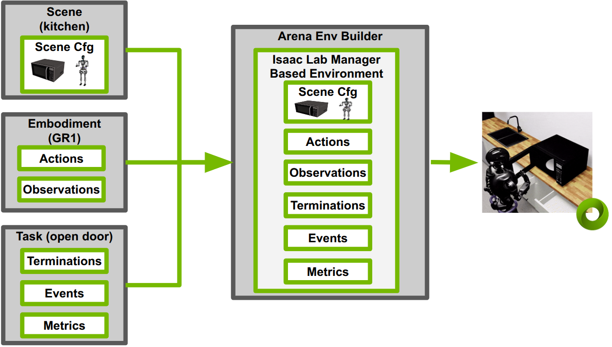

Environment Compilation#
Environment compilation is the step that turns the three independent components —
scene, embodiment, and task — into a runnable Isaac Lab environment.
ArenaEnvBuilder does this by collecting the partial configuration each
component contributes and merging them into a single
ManagerBasedRLEnvCfg.
{kind=link}

ArenaEnvBuilder merges the Scene, Embodiment, and Task into a runnable ManagerBasedRLEnv.#
environment = IsaacLabArenaEnvironment(
name="manipulation_task",
embodiment=embodiment,
scene=scene,
task=task,
)
env_builder = ArenaEnvBuilder(environment, args_cli)
env = env_builder.make_registered()
How it works#
Each component (Scene, Embodiment, Task) exposes a set of get_*_cfg() methods that return its
contribution to each Isaac Lab manager. The typical contributions of each component
to each manager are tabulated below:
Isaac Lab Manager |
Isaac Lab - Arena Component |
||
|---|---|---|---|
Scene |
Embodiment |
Task |
|
Scene |
assets, lights |
robot, sensors |
task-specific assets |
Observations |
proprioception, cameras |
goal observations |
|
Actions |
control interface |
||
Events (resets) |
object placement |
robot reset |
task reset |
Terminations |
success, failure |
||
Rewards |
dense rewards (RL) |
||
Recorder |
metrics-required data |
||
ArenaEnvBuilder.compose_manager_cfg() first assembles the partial manager contributions
from each component into a set of complete managers. Then it merges these complete managers
into a single ManagerBasedRLEnvCfg.
The Arena Environment Builder also optionally solves spatial relations between
objects (--solve_relations). See Object Placement for more details.
The compiled config is then registered with the gym registry under the
environment’s name, and gym.make() returns the gym environment.
Mimic mode#
Passing --mimic at the command line compiles a
ManagerBasedRLMimicEnv instead of a standard ManagerBasedRLEnv.
The mimic environment is used for demonstration generation and includes
subtask configurations from the task. Metrics and recorders are excluded
in mimic mode.
python isaaclab_arena/scripts/imitation_learning/generate_dataset.py --mimic ...